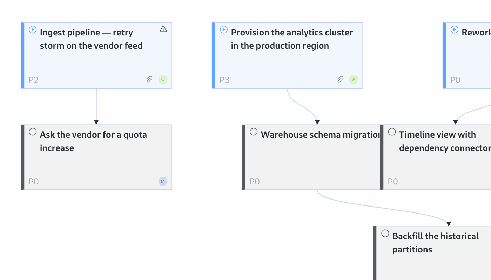

<template id="s5-template">
  <div data-composition-id="s5" data-width="1920" data-height="1080">
    <div class="frame">
      <div class="col">
        <span class="label">Links are editable</span>
        <h2>Drag a card's bottom dot onto another card.</h2>
        <p>The board refuses what it should: itself, its own subtree, a finished parent.</p>
      </div>
      <div class="board">
        
        <svg class="overlay" viewBox="0 0 1400 800" preserveAspectRatio="none">
          <path class="link" d="M220 238 C 380 400 640 500 786 552" />
        </svg>
        <div class="cursor">
          <svg viewBox="0 0 28 36" width="34" height="44"><path d="M2 2 L2 28 L9.5 21.5 L14.5 33 L19 31 L14 19.5 L24 19.5 Z" fill="#16130f" stroke="#efe9dc" stroke-width="1.6"/></svg>
        </div>
        <div class="added">link added</div>
      </div>
    </div>
    <style>
      [data-composition-id="s5"] { width: 100%; height: 100%; background: #efe9dc; color: #16130f; }
      [data-composition-id="s5"] .frame { width: 100%; height: 100%; padding: 60px; display: flex; gap: 40px; align-items: center; }
      [data-composition-id="s5"] .col { width: 360px; flex: 0 0 360px; }
      [data-composition-id="s5"] .label { font-family: "JetBrains Mono", monospace; font-size: 20px; letter-spacing: 0.16em; text-transform: uppercase; color: #1f2be0; }
      [data-composition-id="s5"] h2 { margin-top: 22px; font-family: "Playfair Display", Georgia, serif; font-weight: 900; font-size: 52px; line-height: 1.04; letter-spacing: -0.025em; }
      [data-composition-id="s5"] p { margin-top: 24px; font-family: "Archivo", Helvetica, sans-serif; font-size: 23px; line-height: 1.45; color: rgba(22,19,15,0.85); }
      [data-composition-id="s5"] .board { position: relative; width: 1400px; height: 800px; flex: 0 0 1400px; }
      [data-composition-id="s5"] .board img { width: 1400px; height: 800px; display: block; border: 1px solid rgba(22,19,15,0.22); }
      [data-composition-id="s5"] .overlay { position: absolute; left: 0; top: 0; width: 1400px; height: 800px; pointer-events: none; }
      [data-composition-id="s5"] .link { fill: none; stroke: #1f2be0; stroke-width: 4; stroke-linecap: round; stroke-dasharray: 700; stroke-dashoffset: 700; }
      [data-composition-id="s5"] .cursor { position: absolute; left: 0; top: 0; transform: translate(900px, 700px); }
      [data-composition-id="s5"] .added { position: absolute; left: 24px; top: 690px; font-family: "JetBrains Mono", monospace; font-size: 20px; letter-spacing: 0.14em; text-transform: uppercase; color: #1f2be0; background: #efe9dc; padding: 6px 10px; border: 1px solid #1f2be0; opacity: 0; }
    </style>
    <script>
      (function () {
        const tl = gsap.timeline({ paused: true });
        const q = (sel) => '[data-composition-id="s5"] ' + sel;
        tl.from(q(".label"), { autoAlpha: 0, y: -14, duration: 0.4, ease: "power2.out" }, 0.15);
        tl.from(q("h2"), { autoAlpha: 0, y: 30, duration: 0.6, ease: "power3.out" }, 0.28);
        tl.from(q("p"), { autoAlpha: 0, y: 22, duration: 0.55, ease: "power2.out" }, 0.5);
        tl.from(q(".board"), { autoAlpha: 0, scale: 0.985, duration: 0.6, ease: "power2.out" }, 0.35);
        tl.fromTo(q(".cursor"), { autoAlpha: 0 }, { autoAlpha: 1, duration: 0.22 }, 1.05);
        tl.to(q(".cursor"), { x: 220, y: 232, duration: 0.85, ease: "power2.inOut" }, 1.25);
        tl.to(q(".cursor"), { scale: 0.85, duration: 0.12, ease: "power1.in" }, 2.12);
        tl.to(q(".link"), { strokeDashoffset: 0, duration: 1.15, ease: "power1.inOut" }, 2.24);
        tl.to(q(".cursor"), { x: 786, y: 552, duration: 1.15, ease: "power2.inOut" }, 2.24);
        tl.to(q(".cursor"), { scale: 1, duration: 0.14, ease: "power1.out" }, 3.42);
        tl.fromTo(q(".added"), { autoAlpha: 0, y: 8 }, { autoAlpha: 1, y: 0, duration: 0.3, ease: "power2.out" }, 3.5);
        tl.to(q(".cursor"), { x: 940, y: 690, duration: 0.7, ease: "power2.out" }, 3.85);
        window.__timelines = window.__timelines || {};
        window.__timelines["s5"] = tl;
      })();
    </script>
  </div>
</template>
